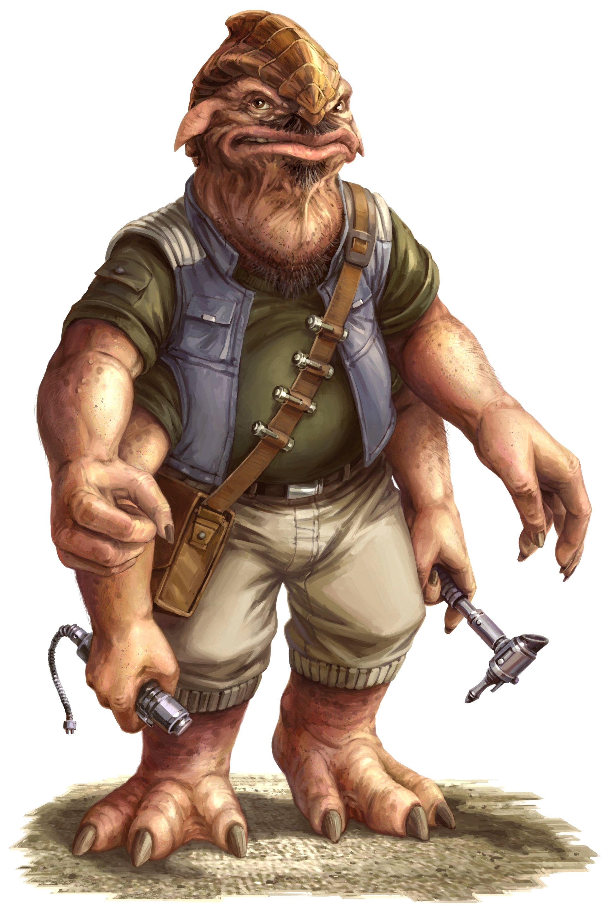

Star Wars is filled with grandiose battles that turn the tides of war for wither side, that captivate our imaginations ans make us ponder the importance of war in the first place. After all, "Wars" is quite literally in the title of the franchise.
Some of the most important battles in the history of Star Wars:
The Battle of Endor
The Battle of Hoth
The Battle of Geonosis
The Battle of Kashyyyk
Planets
The Star Wars franchise had desert planets, swamp planets, ice planets, city planets, forest planets; basically, if there was a climate or condition needed for the film Star Wars, they created a whole new planet for it.
Planet
System
Climate
Tatooine
Tatoo
Desert
Kashyyyk
Kashyyyk
Marsh
Endor
Endor
Forest
Species
The galaxy and its many planets were teeming with diverse species, with members of a species sharing a fixed set of observable biological characteristics. Some species were sentient, capable of intelligent thinking, while others were not, with more than twenty million sentient species in the galaxy.
Fig.1 - A wookie

Fig.2 - A besalisk
Among all the species, a most curious one is the Humans, who invented also curious weapons knows as lightsabers. Here is a totally accurate depiction of a lightsaber: